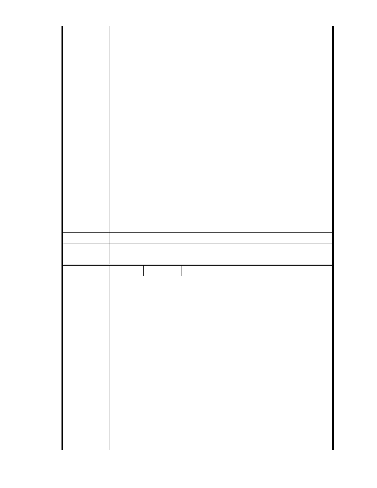

為了保護國家公園、特殊生態或地貌所劃定的保護區．
慈濟想說反正要建園區，這裏的土地便宜些，省下的錢可以拿來把這環
境修復成美麗的綠地公園，美化了市容也可敦親睦鄰，一舉兩得何樂不
為呢？所以就買了這塊地．這樣的想法有錯嗎？但就有人可以不舉證就
造謠說慈濟在全台灣到處蒐購保護區變更圖利？這樣對嗎？
現在我的問題來了：大家想把這個破敗的景觀修復成公園綠地嗎？想的
話，錢從那來呢？政府是不會出的，你我也不可能出的，找環保團體要
嗎？別鬧了，他們為了環保勞心勞力，但搞清楚又不是欠我們的，他們
幹麼要出．那難不成真要”保護保護區”，當以前破壞者的幫兇來守護這
破壞區永垂不朽嗎？
好在只要專家們認定沒有安全問題通過變更，慈濟願意花大錢把這裡建
成 65 % 開放式綠地及滯洪池的廣義水保公園，35 ％綠建築，有大家可
使用的圖書館，親子教室，老人輕安居，環保回收教育中心在內的人文
心靈園區（這不是和都更一樣創造了政府，居民，慈濟三贏的結果嗎）
不好嗎？大家還有更好的選項嗎？該不會認為讓建商拿去蓋住宅大樓會
比較好吧！！
千萬別天真的要求慈濟自掏腰包改成 100％的綠地讓我們享用，等不到
的，他們也跟環保團體一樣不欠我們的．
建議辦法
市 府 說 明 相關陳情意見將納入本案審查人民意見，依法定程序辦理。
委 員 會 決 議 同編號 1。
編 號 259 陳情人 吳淑梅
主席、各位委員、各位媒體朋友、鄉親好鄰居：大家好！
在災難頻傳，環保意識抬頭的時代，期待台灣及國際 NGO 組織慈濟這個
環保團體，有機會成為台灣之光及世界之光！
慈濟對於園區基地規劃所考慮到的環境保護措施，比起許多關心這個基
地的學界和環保社運人士，其實更為周延，更有利於當地的生態保育，
也更符合內湖區居民的需求！
佔地 4 . 4 公頃的園區，有 65 ％作為開放空間，地形景觀包括滯洪湖、
陳 情 理 由 綠地、叢林，讓雨水涵養於土壤中，大量的綠地與景觀池，創造出鳥語
花香的自然生態景觀，全區開放，會成為內湖地區的地標景點，提供民
眾景觀休閒活動及慈濟人文活動，擴大大湖休閒空間與功能！為未來孩
童及居民甚至是國際人士，學習及參觀的生態園區及環保教育站！也是
內湖居民休閒散步、招待朋友觀光的好去處！更是社區居民每天散步、
運動、吸收芬多精的好地方！
另外的 35％的空間規劃，有助於提升內湖區成為科技、人文、和諧、愛
心與自然生態並重的好家園！在這裡誠摯地懇請各位委員在提升台灣形
- 302 -